ВЫШИВКА НА ОДЕЖДЕ
для новичков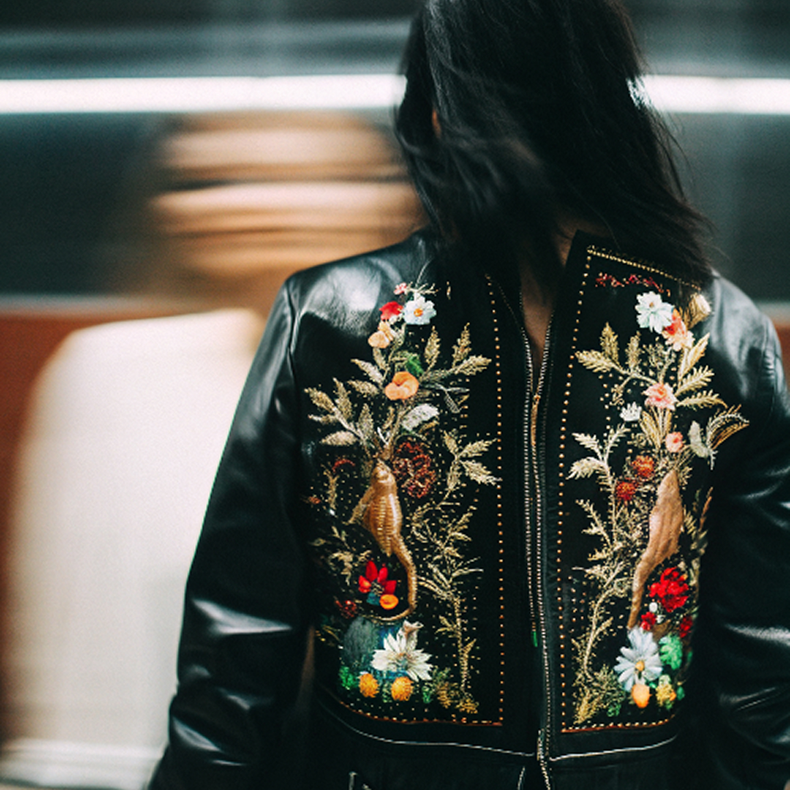
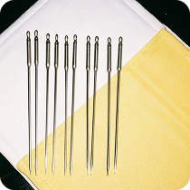
игла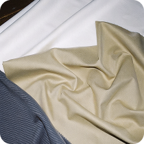
ткань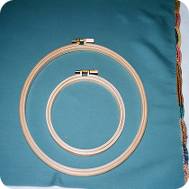
пяльцы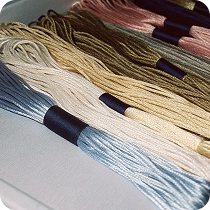
мулине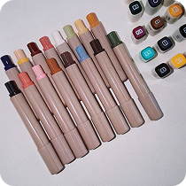
маркерручная вышивка — это магия, способная превратить самую простую вещь в уникальную историю. не нужно быть художником, чтобы начать; достаточно желания и знания нескольких базовых приемов. этот мастер-класс — ваш проводник в мир текстур и цветов, где игла — это кисть, а ткань — холст
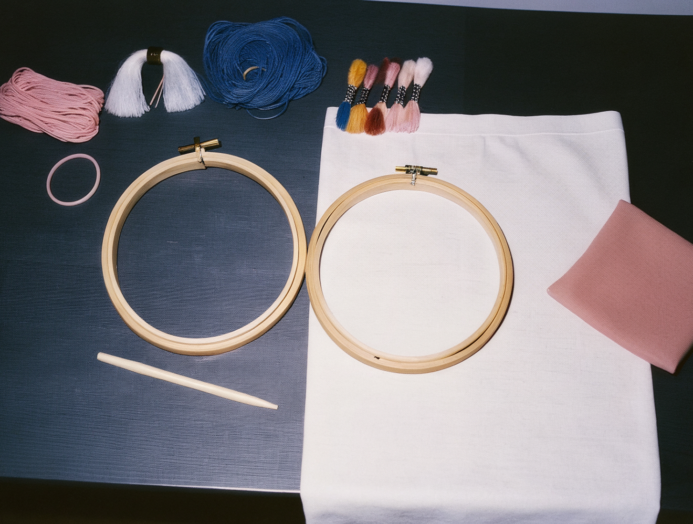
ВЫБОР МАТЕРИАЛОВ И СОЗДАНИЕ ЭСКИЗА
ткань: начните с плотных и стабильных тканей, таких как хлопок, лен или деним...
инструменты: вам понадобятся пяльцы (деревянные или пластиковые), иглы...
эскиз: нарисуйте на бумаге простой и понятный контурный рисунок...
СОВЕТ
перед началом работы на основной вещи потренируйтесь на небольшом лоскутке той же ткани. это поможет «набить руку», почувствовать натяжение нити и плотность ткани
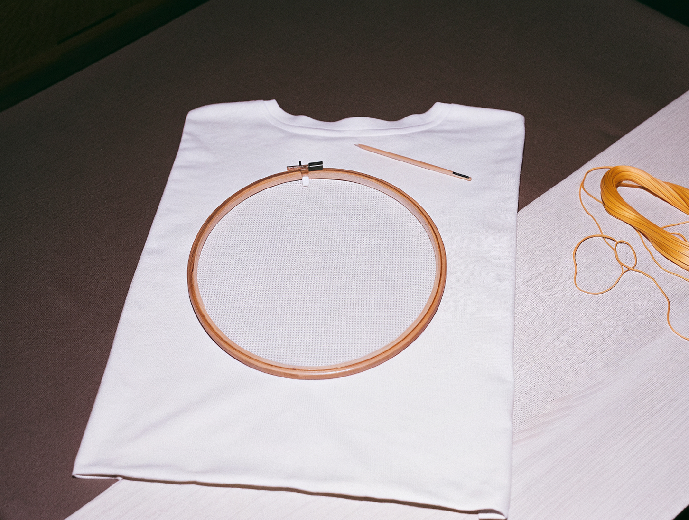
НАТЯЖКА ТКАНИ
ослабьте винт пялец, отделите верхнее кольцо от нижнего...
положите ткань на меньшее кольцо, затем нажмите большим кольцом...
ТИПИЧНЫЕ ОШИБКИ
слишком длинная нить: нить длиннее 50 см будет путаться и обтрепываться
сильное натяжение: не затягивайте стежки слишком сильно, это стянет ткань и создаст «пузырь»
пропуск пялец: вышивка без пялец почти всегда приводит к неровным, стянутым стежкам
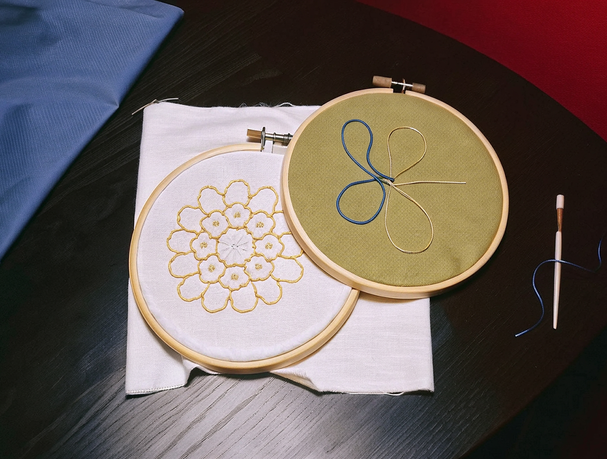
ОСВОЕНИЕ БАЗОВЫХ СТЕЖКОВ
начните с шва «вперед иголку», это самый простой стежок для контуров...
попробуйте шов «назад иголку», он похож на машинную строчку...
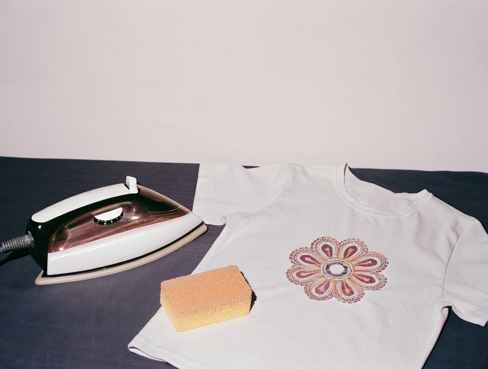
ЗАКРЕПЛЕНИЕ РАБОТЫ И УХОД
чтобы надежно закрепить нить, выведите иглу на изнанку и проведите...
прогладьте готовую вышивку с изнаночной стороны через влажную марлю...
ПРИМЕРЫ РАБОТ
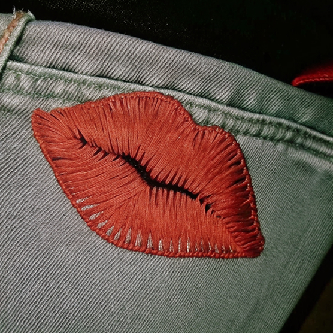
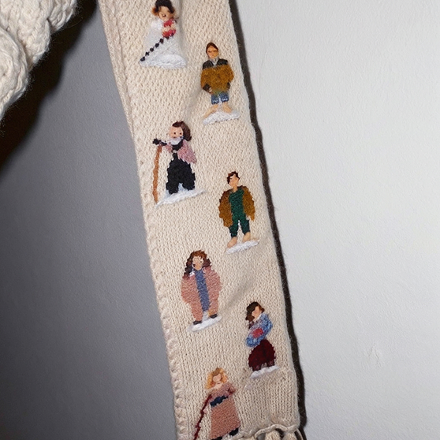
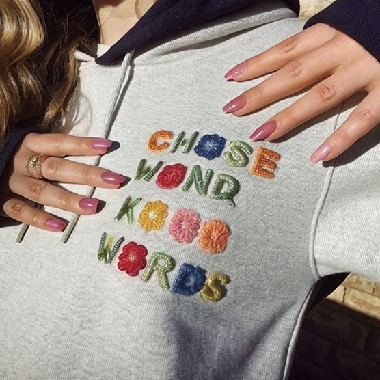
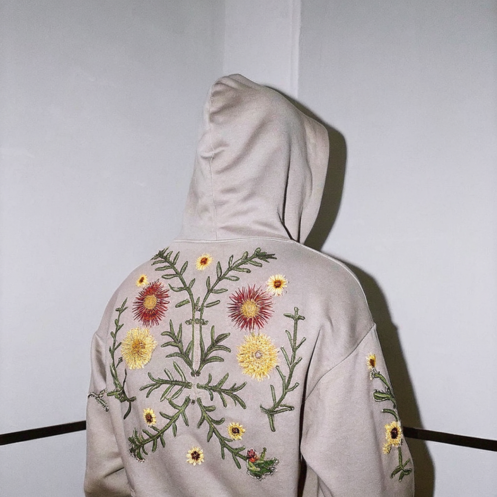